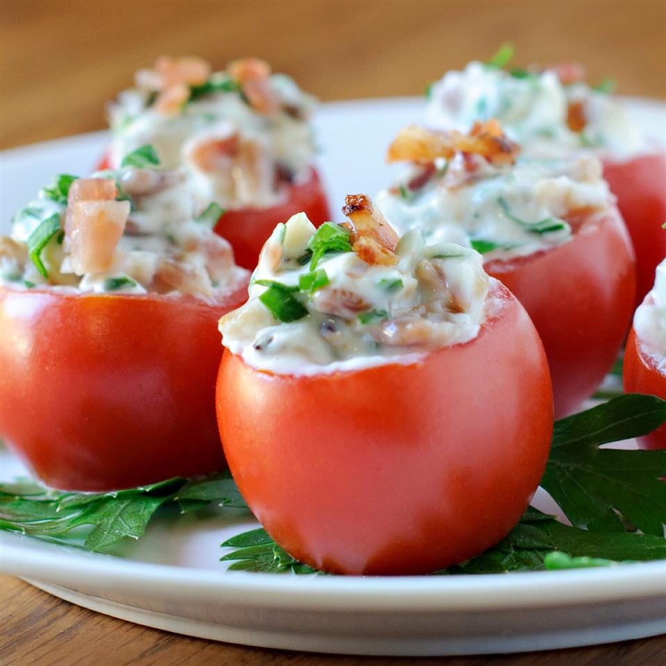

Baby BLT

Prep
Preperation Time: 20 minutes
Cook Time: 10 minutes
Additional Prep: 1 hr
Total: 1 hour 30 minutes
Servings:24
Ingredients
- 1 pound bacon, cooked and crumbled
- 1/2 cup mayonnaise
- 1/4 cup green onions, chopped
- 2 tablespoons chopped fresh parsley
- shredded cheese, if desired
- 24 cherry tomatoes
Directions
- Place bacon in a large, deep skillet. Cook over medium high
heat for 6 to 8 minutes, or until evenly brown. Once cooled,
crumble and set aside.
- In a bowl, stir together the mayonnaise, bacon, green onions,
and parsley until well blended. Set aside.
- Cut a small slice from the top of each tomato. Using a melon
baller or small spoon, scoop out the inside of each tomato
and discard. Fill each tomato with the bacon mixture, and
refrigerate for 1 hour. Serve chilled.